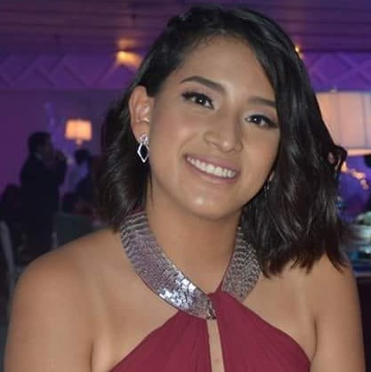

Soy estudiante de la Universidad Panamericana en la carrera de Animación y
Diseño de Videojuegos, amo los retos que me ayudan a crecer
profesional e individualmente, siempre intento trabajar con gran
pasión, compromiso y soy bastante curiosa por todo lo que le rodea y
veo en mi día a día
- Educación
-
Instituto México de Puebla (Generación 2015 - 2018)
Organizadora: Eventos de liderazgo y programa de las naciones unidas
Líder: Eventos como misiones o DIAC (Grupo para formar lideres y emprendedores)
Universidad Panamericana (2018 - Actualidad)
Ingeniería en Animación y Diseño de Videojuegos 2018 - Presente
Organizadora: Eventos de Relaciones Publicas
Parte de equipo: Zumo Robots (2019 - 2020) y del Coro (2018 - Presente)
-
- Experiencia laboral
-
Relaciones Publicas
Becaria, CDMX - 2018-2020
- Organizadora en eventos importantes
- Creadora de contenido para promoción
- Redacción de correos y documentos oficiales
- Monitoreo de impacto publicitario y económico
Freelancer
Aplicación UP, Remoto 2020 - Presente
- Transcripciones y traducciones
- Creadora de contenido audiovisual
Instituto México
Practicas, Puebla Diciembre-2020 - Abril-2020
- Animaciones 2D
- Animadora de la mascota
- Creadora de contenido audiovisual
- Marketing y promociones de la escuela
-
- Habilidades y Conocimientos
-
Habilidades
- Amabilidad
- Honestidad
- Trabajo en equipo
- Buena disposición
- Capacidad de análisis
- Resolución de problemas
- Actitud y mente abierta
Paquetes Computaciones
- Maya
- Word
- Excel
- Krita
- Blender
- OpenToonz
- Power Point
- Adobe Photoshop
- Microsoft Office
- Adobe Illustrator
- Adobe After Effects
Idiomas
- Español: Lengua Madre
- Ingles: Nivel Avanzado